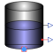

OpenTankModel of a tank under ambient pressure |

|
Information
This information is part of the Modelica Standard Library maintained by the Modelica Association.
This is a simple model of an open tank with volume A*h. The level and the temperature of the medium are measured and provided as output.
Note: If the level of the medium reaches 0 (minimum) or h (maximum), an assertion is triggered.
Note: The flowPort is assumed to be at the bottom. Therefore the pressure at the flowPort is ambient pressure + level*rho*g.
- If the mass flow rate at the port goes into the tank the level increases and the mixing rule is applied to obtain the temperature change of the medium in the tank.
- If the mass flow rate at the port goes out of the tank the level decreases, the temperature of the outflowing medium is defined by the the temperature of the medium in the tank.
It is assumed that the medium in the tank has the same temperature over the whole volume, i.e. mixed thoroughly.
Via the optional heatPort the medium in the tank can be cooled or heated.
Parameters (8)
| medium |
Value: Modelica.Thermal.FluidHeatFlow.Media.Medium() Type: Medium Description: Medium |
|---|---|
| T0 |
Value: Type: Temperature (K) Description: Initial temperature of medium |
| T0fixed |
Value: false Type: Boolean Description: Initial temperature guess value or fixed |
| ATank |
Value: Type: Area (m²) Description: Cross section of tank |
| hTank |
Value: Type: Length (m) Description: Height of tank |
| pAmbient |
Value: Type: Pressure (Pa) Description: Ambient pressure |
| g |
Value: Modelica.Constants.g_n Type: Acceleration (m/s²) Description: Gravitation |
| useHeatPort |
Value: false Type: Boolean Description: =true, if HeatPort is enabled |
Outputs (2)
| T_port |
Type: Temperature (K) Description: Temperature at flowPort_a |
|---|---|
| T |
Type: Temperature (K) Description: Outlet temperature of medium |
Connectors (4)
| flowPort |
Type: FlowPort_a |
|
|---|---|---|
| heatPort |
Type: HeatPort_a Description: Optional port for cooling or heating the medium in the tank |
|
| level |
Type: RealOutput Description: Level of medium in tank |
|
| TTank |
Type: RealOutput Description: Temperature of medium in tank |
Components (1)
| medium |
Type: Medium Description: Medium |
|---|
Used in Examples (2)
|
Modelica.Thermal.FluidHeatFlow.Examples Test the OpenTank model |
|
|
Modelica.Thermal.FluidHeatFlow.Examples Two connected open tanks |